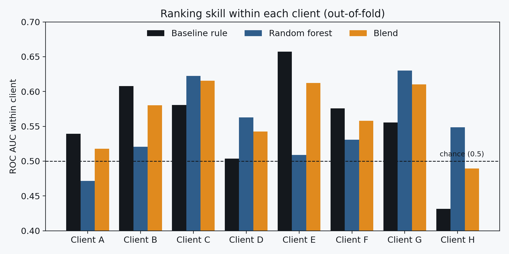
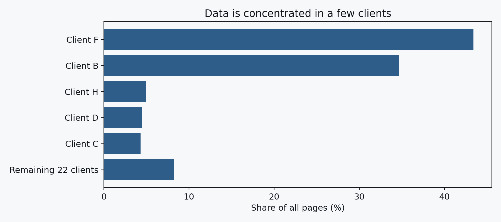
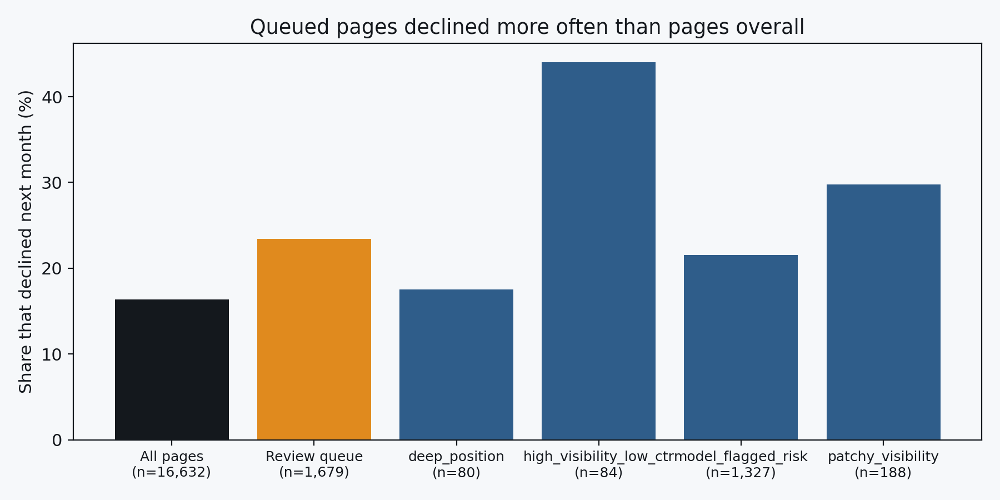

Research paper · FlyRank ML Internship capstone
Ranking Pages at Risk of Losing Search Visibility: A Decision-Support Study
Abstract
Content teams can review only a few pages each month, so they need to know which pages are most likely to lose search visibility next. This study asks whether a random forest ranks such pages better than a simple hand-written rule (stale and low CTR). Using anonymized search data for 16,632 pages from 27 clients, features from February 2026 predict a decline label built from March 2026, evaluated with client-holdout and out-of-fold validation. A single holdout split favoured the rule, but 91% of its test pages came from one client, and ranking within each client gave near-chance skill for both methods (mean AUC about 0.55). A review queue built from a blend of both signals contained pages that declined 1.4 times as often as pages overall (23.4% vs 16.4%), a directional result to be treated as decision support, not prediction.
1. Introduction
Decision supported. A content team can review a limited number of pages per month. A ranked list of pages most at risk of declining tells them where to look first.
Question. Among visible pages, which are most likely to lose search visibility in the following month, and can a simple model rank them better than a hand-written staleness-and-CTR rule?
Framing. This is decision-support ranking. It makes no causal claim that refreshing a page will help it, and no claim about how Google's ranking works.
2. Data
- Release: the FlyRank ML Internship warehouse (
FlyRank/internship-warehouseon Hugging Face), queried with DuckDB. - Tables:
fact_content_daily_performance(daily search metrics) joined withdim_content(page metadata) on a hashed content ID. - Windows: features from February 2026, label from March 2026. June 2026 was kept sealed and not used.
- Sample: 16,632 pages from 27 clients; 16.4% met the decline definition.
- Excluded: rows without search data; pages under 100 impressions in February; pages whose recorded update date falls after the feature window; and GA4 fields, because coverage was sparse.
- Public-safe: only hashed IDs and aggregates are used. Clients appear as anonymous letters. No client names, URLs or queries appear anywhere.
3. Methodology
Label
A page is declined if its March impressions are below 70% of its February impressions. The label uses only the future window.
Features (all from February or earlier)
Impressions, clicks, CTR, average position, days visible, word count, days since last update, page age and content type.
Baseline
A rule with no labels and no model: rank pages higher when they are stale and have low CTR compared with pages at a similar position.
Models
A random forest on the raw features, a second forest on client-relative features (each value ranked within its own client), and a fixed 50/50 rank blend of the baseline and the forest. The blend weights were set in advance, not tuned on labels.
Validation
- Client-holdout split: all pages of a client fall entirely in train or test (18 train clients, 9 test clients, zero overlap).
- Out-of-fold, within-client: five-fold grouped cross-validation so every page is scored by a model that never saw its client. Ranking skill is then measured as ROC AUC inside each client with at least 100 pages and 10 pages of each class (8 clients).
Leakage checks
No March data in the features, no product decision flags, and no page whose update date falls after the feature window.
4. Results
The forest did not beat the simple rule, and most of the apparent skill in the first table came from which client a page belongs to.
Table A: single client-holdout split (7,922 test pages, base rate 0.157)
| Method | ROC AUC | Precision@50 | Precision@100 |
|---|---|---|---|
| Baseline rule (stale + low CTR) | 0.582 | 0.50 | 0.38 |
| Random forest v1 (raw features) | 0.566 | 0.10 | 0.13 |
| Random forest v2 (client-relative) | 0.489 | 0.06 | 0.13 |
Why Table A is misleading. One client made up 91% of the test pages. The rule's top 50 held 32 pages from a single client whose decline rate (31%) was about double the average. Staleness is constant within a client, so the rule ranked clients, not pages.
Table B: within-client ranking, out-of-fold (8 clients)
| Method | Mean AUC | Clients above chance |
|---|---|---|
| Baseline rule | 0.556 | 7 of 8 |
| Random forest | 0.549 | 7 of 8 |
| Blend (50/50) | 0.566 | n/a |
Chance is 0.5. Both methods sit only slightly above it and are effectively tied. The blend's gain of about 0.01 is inside the noise.


5. Limitations and honest framing
- Weak signal. Within-client AUC is about 0.55, barely above chance. Rankings are decision-support hints, not reliable predictions.
- Proxy label. A drop below 70% of February impressions can reflect seasonality, consolidation with another page or tracking noise, not only a real decline.
- Survivorship. Only pages present in both months are kept, so pages that lost all visibility are missing.
- Staleness is client-level. The page table stores each page's latest update date, so days-since-update is the same for every page in a client.
- Concentrated data. Two clients hold about 78% of pages, and only 8 clients had enough pages for within-client testing.
- One window pair. No check across other months, and the sealed June test month was not used.
- Observational only. Nothing here shows that refreshing a page causes recovery or explains how Google ranks pages.
6. Ranked recommendations
The review queue takes the top 10% of pages inside each client by the blended score, so no single client can fill it. It holds 1,679 pages, ordered by February impressions so reviewers see the most exposed pages first. In this data, 23.4% of queued pages declined next month, against 16.4% overall (about 1.4 times). This is directional: pages within a client are correlated, and the underlying signal is weak.
| Reason code | Pages | Declined | Suggested action |
|---|---|---|---|
high_visibility_low_ctr | 84 | 44.0% | Review title and meta description. Lead to test: small sample, likely from few clients. |
patchy_visibility | 188 | 29.8% | Monitor; check for consolidation or indexing problems. |
model_flagged_risk | 1,327 | 21.6% | Monitor and review at the next refresh cycle. No specific cause identified. |
deep_position | 80 | 17.5% | Review depth and intent match. Declined at about the base rate, so this data does not support the action. |

Use this as decision support: it suggests where a reviewer's limited time is more likely to find a declining page than picking at random. It does not say that acting on a page will recover it.
7. Reproducibility
- Repository: github.com/codingsheep17/flyrank-ml-internship
- Capstone notebook:
work/notebooks/capstone.ipynb - Earlier assignments (data contract, baseline score) are in the same
work/notebooks/folder. - Access to the warehouse release needs a free Hugging Face account and a read token; raw data and CSV outputs are not committed.
8. Acknowledgments and data credit
Built on the FlyRank ML Internship dataset, from FlyRank. Thanks to the FlyRank internship team for the data release and curriculum.